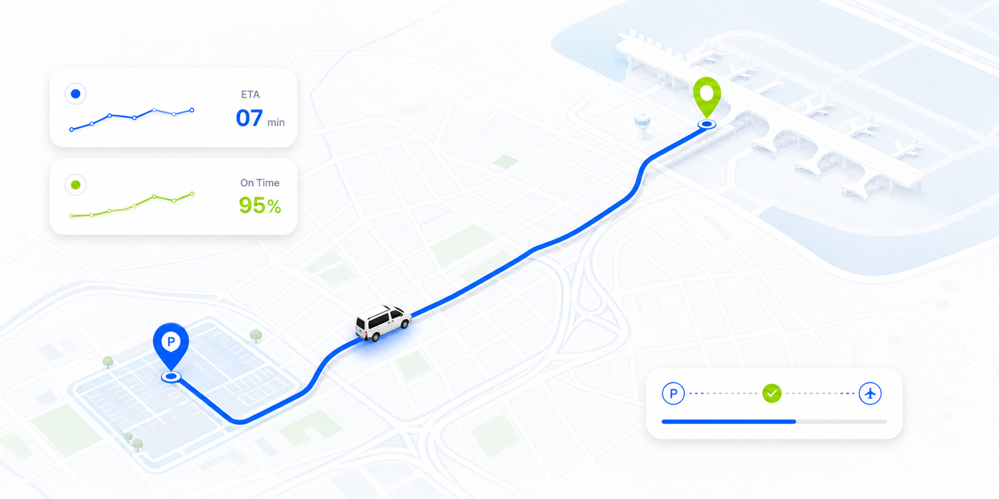
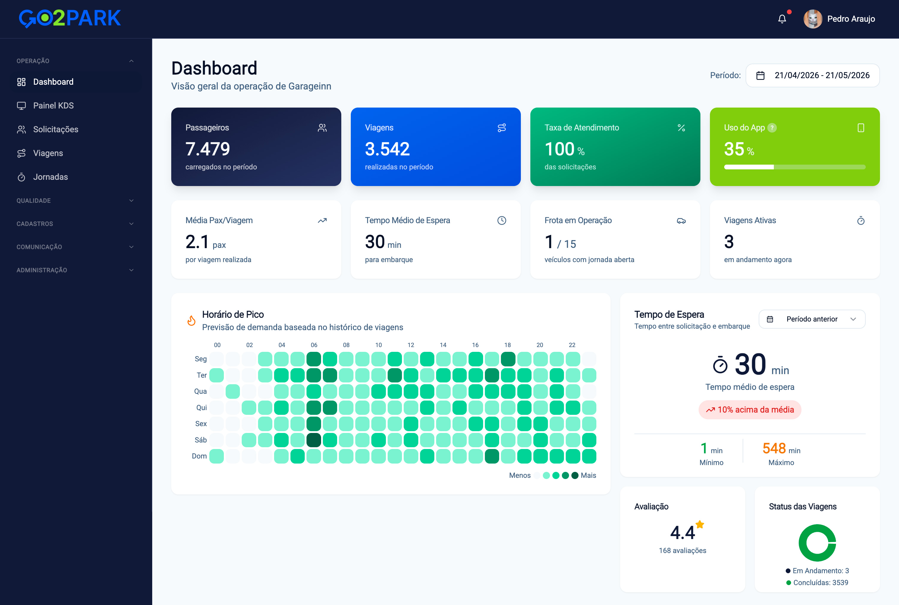
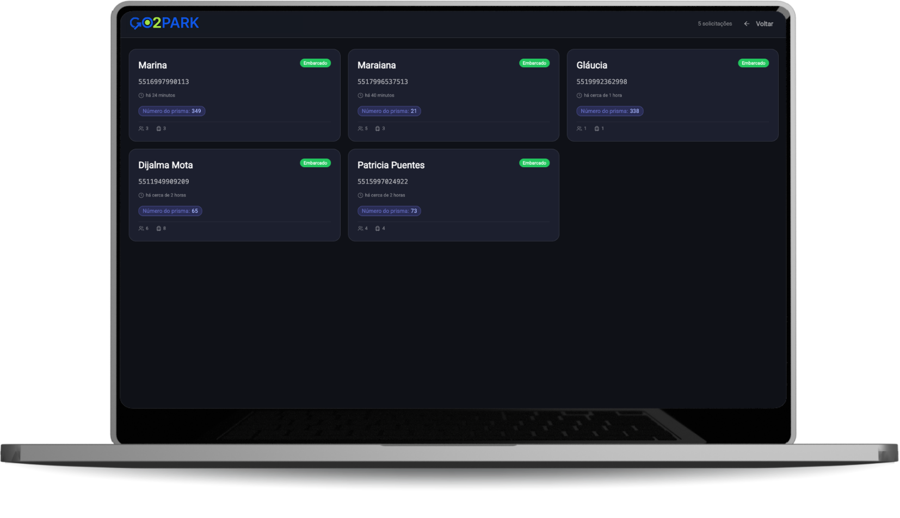
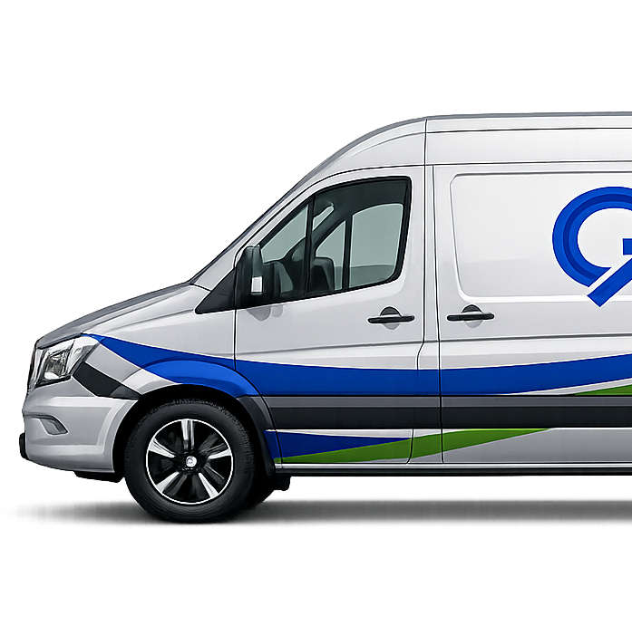

Gestão de traslado para aeroportos
suas vans sem complicar a operação.
Go2Park mostra ao passageiro onde a van está e mostra ao gestor onde a operação perde tempo, combustível e avaliação.
100k+
Passageiros
30%
Redução de custos
98%
Satisfação


ETA 3 min
Van a caminho do embarque
Como a Go2Park funciona
Do balcão ao aeroporto, todo mundo vê o que precisa.
- Passageiro entra no fluxoRecebe link por WhatsApp, SMS ou QR Code. Sem app obrigatório, sem cadastro longo.
- Sistema organiza a vanMotorista vê quem está esperando, quantas malas e qual ponto precisa atender.
- Gestor acompanha tudoPainel com ETA médio, ocupação, demanda por horário, NPS e gargalos.
Operação sem pontos cegos
Da chegada do cliente ao embarque no terminal.
Uma jornada simples para o passageiro e mensurável para o estacionamento.
Transporte sem fricção
Roteiro, ETA, passageiro e motorista no mesmo mapa.
A operação acompanha a jornada em tempo real, do estacionamento ao terminal, com dados claros para passageiro, motorista e gestão.
Veja em 20 minutos onde sua van perde margem.
Calcular operação →Serviços Go2Park
Uma central completa com tracking ao vivo.
Substitua ligações, planilhas e achismos por um sistema que controla tudo em uma única tela.

Seu parceiro para traslado confiável
Menos improviso. Mais dado para renovar contrato e proteger reputação.
- Operação sem call centerO passageiro acompanha o ETA sozinho.
- Demanda antes da saídaA van sai sabendo quem espera e onde.
- Relatório para gestãoNPS, tempo médio, ocupação e gargalos.

KDSfila operacional em tempo real

Van rastreada. Cliente informado. E sua recepção tranquila.
Quando o passageiro sabe onde a van está, sua equipe para de responder a mesma pergunta o dia inteiro.
Quero testar →Como muda a rotina
O atendimento fica mais leve quando a informação chega antes da reclamação.
"A pergunta sobre onde estava a van praticamente sumiu do balcão."
OPOperaçõesEstacionamento parceiro
"Antes o passageiro ligava para perguntar o ETA. Agora ele acompanha sozinho."
ATAtendimentoEquipe de recepção
"O painel deixou claro quais horários pediam reforço de motorista."
PLPlanejamentoGestão operacional
"A pergunta sobre onde estava a van praticamente sumiu do balcão."
OPOperaçõesEstacionamento parceiro
"Antes o passageiro ligava para perguntar o ETA. Agora ele acompanha sozinho."
ATAtendimentoEquipe de recepção
"O painel deixou claro quais horários pediam reforço de motorista."
PLPlanejamentoGestão operacional
"O motorista passou a sair sabendo quem estava esperando e quantas malas levava."
MOMotoristasOperação de van
"A fila ficou visível para todo mundo, sem depender de planilha ou grupo de WhatsApp."
COCoordenaçãoBase de embarque
"Conseguimos medir tempo médio de espera sem pedir relatório manual."
BIDadosControle de qualidade
"O motorista passou a sair sabendo quem estava esperando e quantas malas levava."
MOMotoristasOperação de van
"A fila ficou visível para todo mundo, sem depender de planilha ou grupo de WhatsApp."
COCoordenaçãoBase de embarque
"Conseguimos medir tempo médio de espera sem pedir relatório manual."
BIDadosControle de qualidade
"O relatório ajudou a explicar gargalos que antes pareciam impressão da equipe."
GEGestãoEstacionamento parceiro
"A diretoria passou a enxergar ocupação, espera e demanda no mesmo lugar."
DIDiretoriaIndicadores operacionais
"Menos ligação no balcão e mais previsibilidade para a saída das vans."
CXExperiênciaPassageiros
"O relatório ajudou a explicar gargalos que antes pareciam impressão da equipe."
GEGestãoEstacionamento parceiro
"A diretoria passou a enxergar ocupação, espera e demanda no mesmo lugar."
DIDiretoriaIndicadores operacionais
"Menos ligação no balcão e mais previsibilidade para a saída das vans."
CXExperiênciaPassageiros
Estacionamentos que já operam com visibilidade de ponta a ponta
Critérios de confiança
O que a página precisa provar logo de cara.
Soluções para estacionamentos que fazem translado todos os dias.
Você opera com frota própria. A Go2Park organiza a informação para reduzir espera, reclamação e viagens sem demanda.